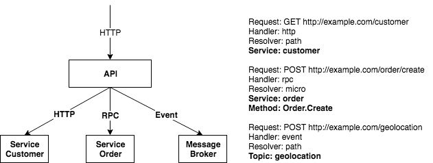
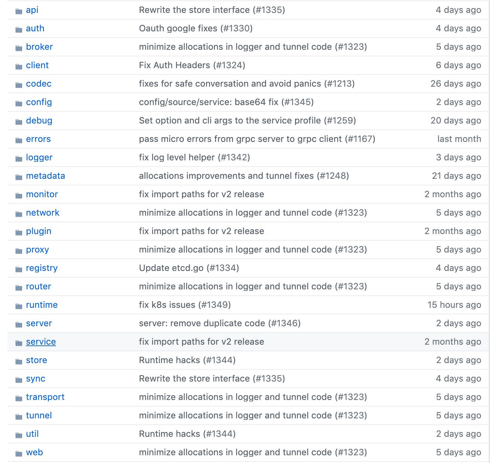
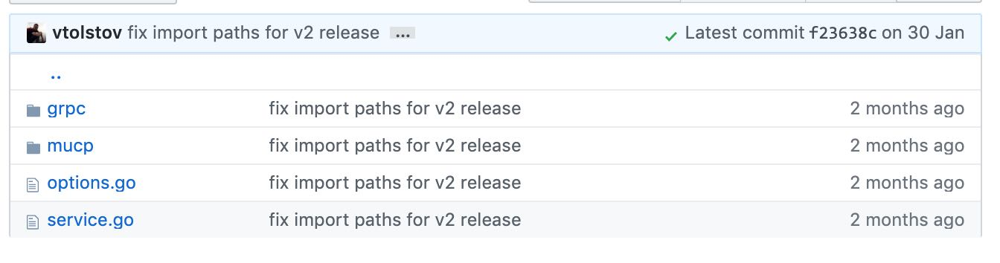
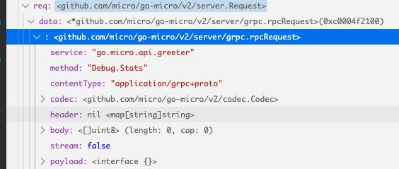
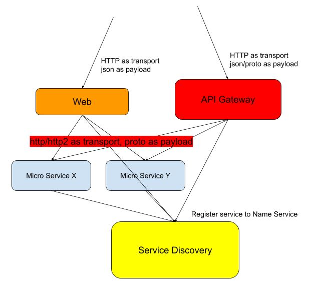

micro.mu 项目解析
官网地址在 https://micro.mu/docs/index.html 开发文档在 https://micro.github.io/development/
1. 整体结构
这个项目的目标是方便微服务的开发和部署，分为这么几层：
- framework. https://micro.mu/docs/framework.html 用什么框架来编写微服务。可以有多种实现，现在只有go-micro. 解决下面这些问题：
- RPC 通信管理，怎么和其他服务通信
- Config 配置管理，能否动态地读取配置
- Service Discovery 服务发现
- runtime https://micro.mu/docs/runtime.html 怎么讲这些微服务整合起来。提供现成工具，只需要写配置，不写代码。解决下面这些问题：
- API Gateway 对外可以通过HTTP接口访问到内部所有服务（同步，异步，websocket长连接等等）
- Web Dashboard 通过浏览器访问到内部所有服务
- Command Line, Slack Bot 通过命令行和机器人访问到所有服务
- Service Proxy. 服务代理。想象它本身也是一个服务，被代理的服务在启动的时候可以指定，自己挂在哪个服务代理下面。
- Service Health. 在本地启动一个服务器，包括本地其他服务的健康状况。如果服务部署在k8s上，这个会很有用。
- Service Network. 可以打通多个datacenter之间的服务，提高服务的可用性。
- Service Tunnel. 可以打通本地和生产环境，方便本地开发和调试
- platform. https://micro.mu/docs/platform.html 还没有出来，估计是想把云厂商服务这块也抽象出来：
- runtime. 在云上的具体实现
- registry. 注册服务
- broker. 消息队列服务，
- proxy. 怎么把其他云服务通过gRPC打通
- store. 分布式kv存储服务
- debug. 调试，日志和指标
- auth. 鉴权？？
- events. 流式事件和时序存储
下图是我从官网直接copy过来的，我说一下这里的对应关系：
- entrypoints 这层就是上面的 runtime 要做的事情，将接口标准的服务串起来。
- services 这层就是framework要做的事情，方便开发者开发接口标准的服务。
- runtime 这层其实是platform要做的事情，将“具体怎么串”起来之这件事情和云平台(or 其他服务)连接起来，提供标准的服务。
这里处处都可以看到“标准化”：如果开发者编写的服务使用的都是标准接口的话，那么就可以很容易地把这些服务串联起来的，形成更大的标准服务。

2. 三个部分
接上篇继续写，之前说了micro.mu项目分成3个部分:
- framework 基础框架，开发者用它来编写服务
- runtime 运行时，开发者用它来管理服务
- platform 运行平台，开发者用它来管理云厂商的服务，和自己服务做对接。
从现在的分析上看，platform和runtime都是使用framework来实现的。这个framework叫做 go-micro https://github.com/micro/go-micro. 框架就要支持插件机制，所以他们也维护了插件列表 https://github.com/micro/go-plugins. 所以这个framework还是非常强大的，最重要的是它提供了标准化的实现和操作方式。
这个framework结构如下，从下面往上写：
- transport 传输协议, http, grpc, rabbitmq, quic, nats, memory等等，定义怎么在上面传输二进制数据。
- selector 负载均衡的策略选择，包括选择对象：DNS，注册节点，以及选择算法：Random/RoundRobin
- registry 注册服务用来服务发现，mdns(multicast dns), etcd, consul, nats.
- codec 协议编解码, proto, protorpc, json, jsonrpc, grpc, text, bytes. 为什么有jsonrpc和json? 差别在于jsonrpc区分header和body, header里面设置了method和id两个字段，body则是完全的请求数据。所以codec不仅仅是序列化和反序列化，还在一定程度上完成了协议解析。
- broker 消息中心，主要用来实现pub/sub模型，kafka, rabbitmq, sqs, stomp, grpc, http. 为什么还有grpc/http呢？因为直接请求过去不等待返回，对端等待处理就实现了pub/sub了，只不过不太可靠。

上面每个部分都有对应的接口定义，比如transport如下：通过配置（文件，环境变量，参数或者是配置服务器）设置具体实现以及参数
type Transport interface { Init(...Option) error Options() Options Dial(addr string, opts ...DialOption) (Client, error) Listen(addr string, opts ...ListenOption) (Listener, error) String() string }
client 工作过程大致就是：
- 从registry中找到服务节点
- 通过selector选择其中一个服务节点连接（负责缓存，重试和健康监测）
- 将请求结构通过codec编码成为二进制
- 二进制通过transport到达对端 （双向通信）或者是到达broker（单向通信）
- 从transport上接收数据，解码，交给handler处理（双向通信）
server 过程则相对简单：
- 启动服务向registry上注册自己的地址
- 等待从transport和broker上到达的请求
- 通过codec解析之后交给handler
搞过netty的人知道有pipeline这个东西，可以在client/server处理的过程中加入自己的处理逻辑，很像python语言的decorator. micro里面也提供了这么一种机制叫做 wrapper. server启动的时候会加上3个handlers, 可以作为参考
options.Server.Init( server.WrapHandler(wrapper.HandlerStats(stats.DefaultStats)), server.WrapHandler(wrapper.TraceHandler(trace.DefaultTracer)), server.WrapHandler(wrapper.AuthHandler(authFn)), )
framewok里面还带了3个小功能值得说下：
- web. 它可以把一个go语言编写的http服务器包装起来，它就支持了服务发现。
- config. 它支持各个地方载入配置，支持合并配置，以及监控配置发生变化
- api. 使用api这个模块可以编写出上面一篇说的API Gateway.
API Gateway入下图，对外暴露的HTTP协议，可以将这些请求转发给各个服务，包括名字服务（服务发现）

3. 组件规范
这个项目代码非常规范，上面提到的每个模块都可以在这里找到对应的目录，然后每个目录下面有具体的各种实现，以及两个文件 <组件名>.go 和 options.go


通过来说一个组件会包含两个部分：1. 接口定义 2. 配置选项。以service为例，接口定义以及配置选项如下：
// ====== Service 接口 ===== type Service interface { // The service name Name() string // Init initialises options Init(...Option) // Options returns the current options Options() Options // Client is used to call services Client() client.Client // Server is for handling requests and events Server() server.Server // Run the service Run() error // The service implementation String() string } type Option func(*Options) // ===== options ===== type Options struct { Broker broker.Broker Client client.Client Server server.Server Registry registry.Registry Transport transport.Transport // Before and After funcs BeforeStart []func() error BeforeStop []func() error AfterStart []func() error AfterStop []func() error // Other options for implementations of the interface // can be stored in a context Context context.Context } // ====== service 实现 ===== type service struct { opts Options once sync.Once }
然后在使用期间，这个组件几乎所有需要使用的对象，都是从options里面获得的，比如client, broker, server, registry等。这里Option定义有点奇怪，它并不是一个字符串或者值，而是一个动作function. 这个动作接受的参数是Options对象，然后可以在这个动作里面修改Options里面的内容，间接地达到了配置的效果，有点IOC的思想。
打个比方，我们想设置service的名称，代码如下：
- 我们在 `micro.NewService` 里面传入一个Option `micro.Name`
- 这个Option操作是什么呢？调用 `options.Server.Init`, 而 `server.Name` 又是一个Option（但是和上面的Option分属两个名字空间，概念一样但是不一个东西）
- `server.Name` 操作是什么呢？就是把 `server.Options.Name`这个字段赋值
所以这串操作最终是什么意思？就是把name放到了service.Options.Server.Options.Name这个字段上了。
service := micro.NewService( micro.Name("go.micro.api.greeter"), ) // ===== micro.Name ===== func Name(n string) Option { return func(o *Options) { o.Server.Init(server.Name(n)) } } // ===== server.Name ===== func Name(n string) Option { return func(o *Options) { o.Name = n } }
虽然这个层次很多甚至有点乱，但是把握起来不难，就是要抓住一个组件如何定义的：
- 所依赖的各种组件
- 自己的配置参数
- 暴露出来的接口
配置参数时，不仅可以修改自身的配置参数，还可以修改所依赖组件的配置参数。以client为例，修改自身的配置参数包括pool size, timeout等，而修改所依赖逐渐的配置参数则包括registry, codec, transport等。通过将各个组件的接口标准化，然后以配置标准化的方式将这些组件结合起来，这个框架才能算是可插拔的。
另外这种插件机制，最好还是在某个地方（配置文件，环境变量）显式指定比较好。我在分析 client.DefaultClient 的时候猜了一个巨大的坑：
代码里面是显式指定了 client.DefaultClient 的
// client.client.go var ( // DefaultClient is a default client to use out of the box DefaultClient Client = newRpcClient() // DefaultBackoff is the default backoff function for retries ... )
但是在实际调用的时候，发现使用的并不是这个 rpcClient, 而是 grpcClient. 排除了所有的代码路口之后，终于发现在 go-micro 项目的最顶层有个 defaults.go
func init() { // default client client.DefaultClient = gcli.NewClient() // grpcClient // default server server.DefaultServer = gsrv.NewServer() // grpcServer // default store store.DefaultStore = memStore.NewStore() // memory store // set default trace trace.DefaultTracer = memTrace.NewTracer() // memory trace }
光做静态代码分析还不行，因为某个模块的初始化可能会改写这些值，这是比较坑爹但是也比较灵活的地方。
4. 编写服务
调用一个服务，是通过service name + method name 来确定的，对于内部功能也是这样。比如我们想查看某个服务的统计耗时情况，我在server里面增加了一个端点。可以看到这个service name是 "go.micro.api.greeter", method name 是 "Debug.Stats"

如果这样来看的话，我们之前编写的Restful API不能直接纳入到micro.mu中。因为Restful API是针对资源进行抽象的， 而micro.mu则是针对方法调用进行抽象的。为了更好地利用micro.mu这个运行平台，我们最好不用使用Restful API而是使用RPC(service name + method name)来编写服务。我们不用Restful API来编写服务，但是可以通过API Gateway将RPC以Restful API暴露出来，所以这个转换关系是单向的。RPC->Restful API好搞，Restful API->RPC不好搞，主要原因还是rpc更简单，它只要求service name + method name，而restful api则有更多的设计讲究。
下图是现在几个组件之间的传输协议和编解码方式：内部是http/http2做传输协议，proto作为编解码实现；对外的话是http, json和proto都可以做编解码。

这里在提一下micro提供的3个功能：
- go web https://micro.mu/docs/go-web.html 可以把http服务注册是service discovery. 但是如果看上面的话，就知道这个东西意义不大。
- micro service –endpoint http://localhost:9200 go run main.go 将一个grpc服务注册到service discover上，稍微有点用。
- https://github.com/micro/clients multi-language clients for micro. 给各种语言提供API Gateway的统一访问方式，稍微有点用。
我觉得内部服务之间的通信：
- http/http2 + proto（也就是现在grpc的实现）逐渐会变为标准
- 编码方式尽可能地高效，但是一定要兼容json，哪怕性能差点。
现在protoc生成的go语言实现，就能很好地兼容json.
// generated by protoc --go_out=. type Request struct { Name string `protobuf:"bytes,1,opt,name=name,proto3" json:"name,omitempty"` XXX_NoUnkeyedLiteral struct{} `json:"-"` XXX_unrecognized []byte `json:"-"` XXX_sizecache int32 `json:"-"` } func main() { text := `{"name": "hello"}` req := proto.Request{} // 这里都不用外部库的支持 // jsonpb.Unmarshal(bytes.NewReader([]byte(text)), &req) json.Unmarshal([]byte(text), &req) fmt.Println(req.Name) }